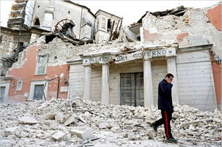

A powerful 6.3-magnitude earthquake shook central Italy (Abruzzo region) early Monday, April 6th. As of today, officials said that as many as 179 people had been killed, at least 1,500 injured and tens of thousands left homeless. For the latest updates: Online newspapers (in Italian): - Repubblica - Corriere della Sera (article in English) Images - Aerial pictures of the affected area (by Repubblica) - Gallery 1 and Gallery 2 (by AGI) Video - Quake's aftermath in Onna village (by BBC) - Aerial footage of quake aftermath (by BBC) Live conversations - Twitter (use hashtags #terremoto #earthquake #italy)